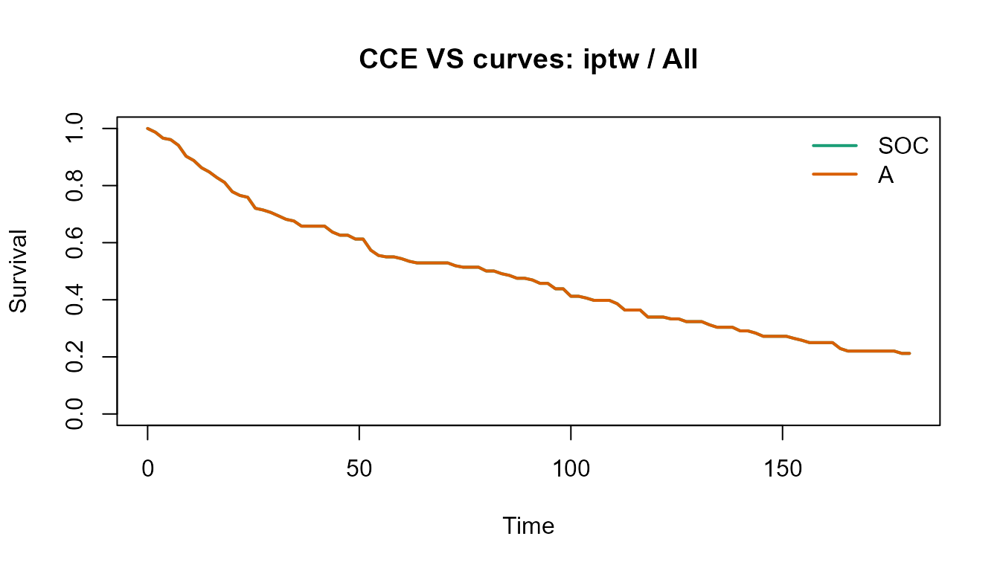
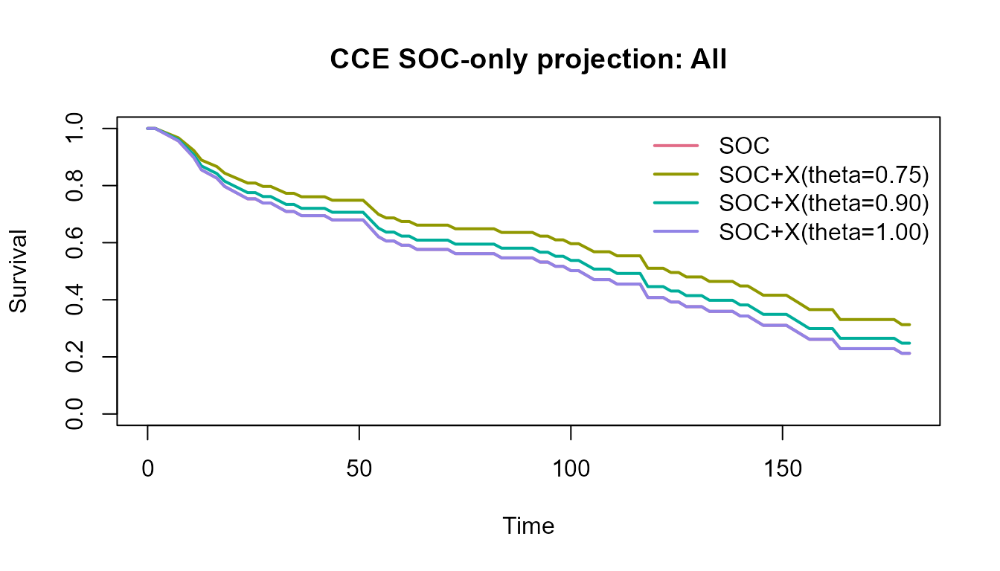

Public oncology data workflow
public-oncology-data.RmdOverview
This article uses the public survival::veteran dataset
as a compact real-data example. It is not a production oncology
registry, but it provides a real patient-level time-to-event dataset
with treatment assignment and baseline covariates.
Prepare the public dataset
library(cce)
library(survival)
data(veteran, package = "survival")
#> Warning in data(veteran, package = "survival"): data set 'veteran' not found
veteran2 <- veteran
veteran2$arm <- ifelse(veteran2$trt == 1, "SOC", "A")
veteran2$event <- veteran2$status
veteran2$subgroup <- as.character(veteran2$celltype)
veteran2$prior <- factor(veteran2$prior)
head(veteran2)
#> trt celltype time status karno diagtime age prior arm event subgroup
#> 1 1 squamous 72 1 60 7 69 0 SOC 1 squamous
#> 2 1 squamous 411 1 70 5 64 10 SOC 1 squamous
#> 3 1 squamous 228 1 60 3 38 0 SOC 1 squamous
#> 4 1 squamous 126 1 60 9 63 10 SOC 1 squamous
#> 5 1 squamous 118 1 70 11 65 10 SOC 1 squamous
#> 6 1 squamous 10 1 20 5 49 0 SOC 1 squamousFit a VS comparison
vs_fit <- fit_cce_vs(
data = veteran2,
arm = "arm",
time = "time",
event = "event",
covariates = c("karno", "diagtime", "age", "prior", "subgroup"),
subgroup = "subgroup",
tau = 180,
landmark_times = c(90, 180),
bootstrap = 10,
seed = 300
)
summary(vs_fit)
#> CCE VS result
#> Label: ok
#> Warnings: Residual covariate imbalance detected. | g-formula and IPTW disagree on the RMST direction.
#> mode method subgroup tau rmst_arm0 rmst_arm1 delta_rmst landmark_time
#> 1 vs gformula All 180 17.423484 13.708854 -3.7146293600 90
#> 2 vs gformula All 180 17.423484 13.708854 -3.7146293600 180
#> 3 vs iptw All 180 88.513868 88.517794 0.0039259530 90
#> 4 vs iptw All 180 88.513868 88.517794 0.0039259530 180
#> 5 vs gformula adeno 180 3.637697 3.637374 -0.0003230898 90
#> 6 vs gformula adeno 180 3.637697 3.637374 -0.0003230898 180
#> survival_arm0 survival_arm1 delta_survival delta_rmst_lower_ci
#> 1 2.284475e-02 1.062429e-02 -1.222046e-02 -9.1317452
#> 2 1.166565e-03 2.869724e-04 -8.795925e-04 -9.1317452
#> 3 4.753097e-01 4.753350e-01 2.531322e-05 -11.0828252
#> 4 2.121428e-01 2.121664e-01 2.355226e-05 -11.0828252
#> 5 2.693089e-210 2.900255e-222 -2.693089e-210 -0.8764966
#> 6 0.000000e+00 0.000000e+00 0.000000e+00 -0.8764966
#> delta_rmst_upper_ci delta_survival_lower_ci delta_survival_upper_ci
#> 1 -0.98454187 -3.990590e-02 -1.360854e-04
#> 2 -0.98454187 -2.462785e-02 -1.241037e-09
#> 3 7.69667224 -7.205622e-02 4.926232e-02
#> 4 7.69667224 -6.251200e-02 4.403169e-02
#> 5 0.03391937 -9.203209e-22 1.794115e-24
#> 6 0.03391937 -5.377227e-151 2.166097e-208
plot(vs_fit, method = "iptw", subgroup = "All")
head(as_effects_df(vs_fit))
#> mode method subgroup tau rmst_arm0 rmst_arm1 delta_rmst landmark_time
#> 1 vs gformula All 180 17.423484 13.708854 -3.7146293600 90
#> 2 vs gformula All 180 17.423484 13.708854 -3.7146293600 180
#> 3 vs iptw All 180 88.513868 88.517794 0.0039259530 90
#> 4 vs iptw All 180 88.513868 88.517794 0.0039259530 180
#> 5 vs gformula adeno 180 3.637697 3.637374 -0.0003230898 90
#> 6 vs gformula adeno 180 3.637697 3.637374 -0.0003230898 180
#> survival_arm0 survival_arm1 delta_survival delta_rmst_lower_ci
#> 1 2.284475e-02 1.062429e-02 -1.222046e-02 -9.1317452
#> 2 1.166565e-03 2.869724e-04 -8.795925e-04 -9.1317452
#> 3 4.753097e-01 4.753350e-01 2.531322e-05 -11.0828252
#> 4 2.121428e-01 2.121664e-01 2.355226e-05 -11.0828252
#> 5 2.693089e-210 2.900255e-222 -2.693089e-210 -0.8764966
#> 6 0.000000e+00 0.000000e+00 0.000000e+00 -0.8764966
#> delta_rmst_upper_ci delta_survival_lower_ci delta_survival_upper_ci
#> 1 -0.98454187 -3.990590e-02 -1.360854e-04
#> 2 -0.98454187 -2.462785e-02 -1.241037e-09
#> 3 7.69667224 -7.205622e-02 4.926232e-02
#> 4 7.69667224 -6.251200e-02 4.403169e-02
#> 5 0.03391937 -9.203209e-22 1.794115e-24
#> 6 0.03391937 -5.377227e-151 2.166097e-208Create an SOC-only projection
For scenario planning, we can keep only the SOC rows and overlay assumption-based proportional-hazards projections.
soc_fit <- project_soc_only(
data = veteran2,
arm = "arm",
soc_level = "SOC",
time = "time",
event = "event",
subgroup = "subgroup",
tau = 180,
hr_scenarios = c(0.75, 0.90, 1.00),
target_delta_rmst = 15,
prior_mean_log_hr = log(0.85),
prior_sd_log_hr = 0.20,
bootstrap = 10,
seed = 400
)
summary(soc_fit)
#> CCE SOC-only projection
#> Label: Projection (assumption-based)
#> mode method subgroup scenario_hr tau rmst_arm0 rmst_arm1
#> 1 soc_only projection_ph All 0.75 180 96.12878 110.83745
#> 2 soc_only projection_ph All 0.75 180 96.12878 110.83745
#> 3 soc_only projection_ph All 0.90 180 96.12878 101.65283
#> 4 soc_only projection_ph All 0.90 180 96.12878 101.65283
#> 5 soc_only projection_ph All 1.00 180 96.12878 96.12878
#> 6 soc_only projection_ph All 1.00 180 96.12878 96.12878
#> delta_rmst landmark_time survival_arm0 survival_arm1 delta_survival
#> 1 14.708678 90 0.5467462 0.6358276 0.08908133
#> 2 14.708678 180 0.2124268 0.3129010 0.10047422
#> 3 5.524058 90 0.5467462 0.5807741 0.03402784
#> 4 5.524058 180 0.2124268 0.2480209 0.03559415
#> 5 0.000000 90 0.5467462 0.5467462 0.00000000
#> 6 0.000000 180 0.2124268 0.2124268 0.00000000
#> required_hr pos_proxy delta_rmst_lower_ci delta_rmst_upper_ci
#> 1 0.7455392 0.258 13.485943 15.473156
#> 2 0.7455392 0.258 13.485943 15.473156
#> 3 0.7455392 0.258 5.116966 5.797128
#> 4 0.7455392 0.258 5.116966 5.797128
#> 5 0.7455392 0.258 0.000000 0.000000
#> 6 0.7455392 0.258 0.000000 0.000000
#> delta_survival_lower_ci delta_survival_upper_ci
#> 1 0.07880162 0.09380862
#> 2 0.08812526 0.10462482
#> 3 0.03039300 0.03562514
#> 4 0.03010239 0.03781181
#> 5 0.00000000 0.00000000
#> 6 0.00000000 0.00000000
plot(soc_fit, subgroup = "All")
Interpretation notes
- VS-mode results are model-based causal estimates under standard identifying assumptions.
- SOC-only outputs are projections, not causal estimates.
- In real programs, diagnostics should be interpreted together with data provenance, treatment policy definitions, and endpoint adjudication rules.